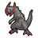

Access to:
Accessible from the area (via airplane): Mistralton City
Places of interest:
This area is only accessible after obtaining the Permit from Professor Juniper, which requires seeing every Pokémon in the Unova Pokédex (except for Victini, Keldeo, Meloetta, and Genesect).
Utility:
Surf is required to access a Max Potion, a Big Nugget, and a Rare Candy. Wild Pokémon can also be encountered here with Surf.
Waterfall is required to access a Rare Candy.
| Pokémon | Level | Notes | |
|---|---|---|---|
|
 |
Haxorus (Shiny) | 60 | If defeated or run from, it reappears after defeating the Elite Four. |
| Item | Location | Notes |
|---|---|---|
| Max Potion | Northwest of the airplane | Requires Surf. |
| Big Nugget | In the dark grass north of Haxorus | Requires Surf. |
| Rare Candy | On the cliff in the northeast | Requires Surf and Waterfall. |